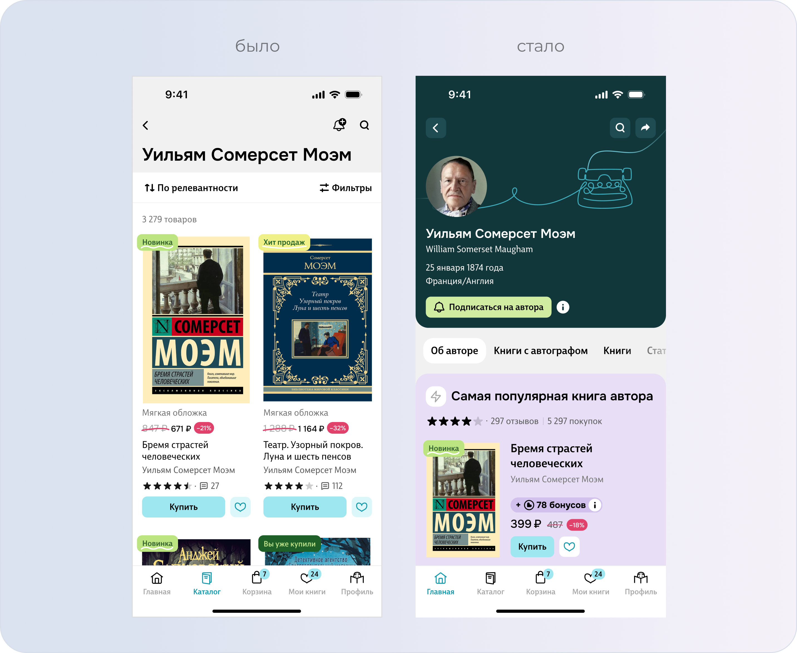
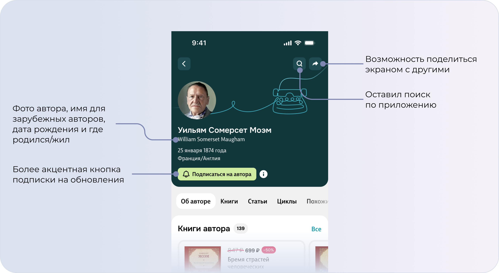
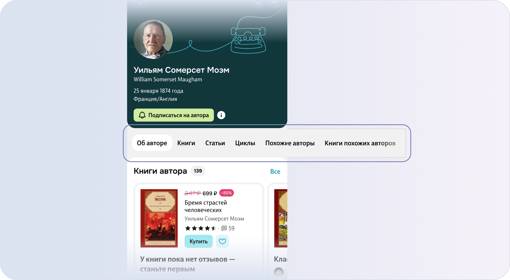
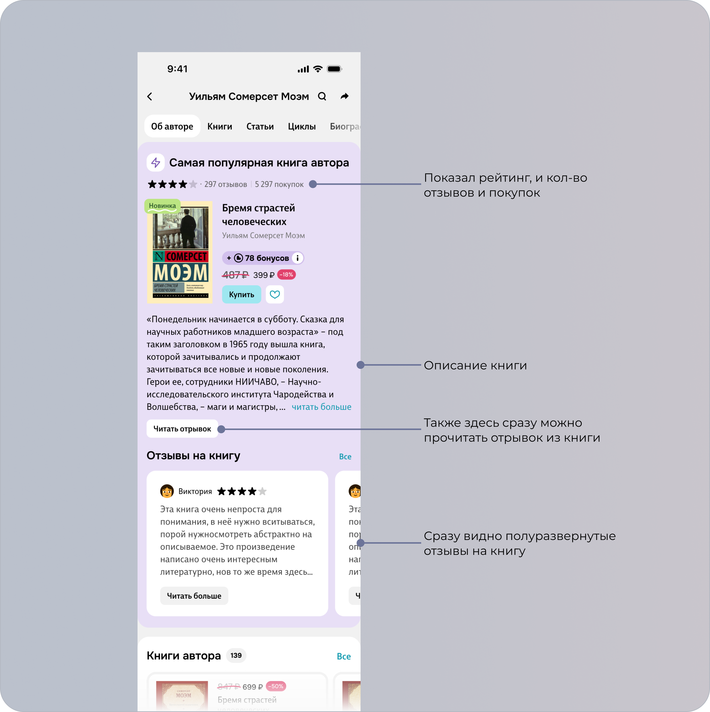
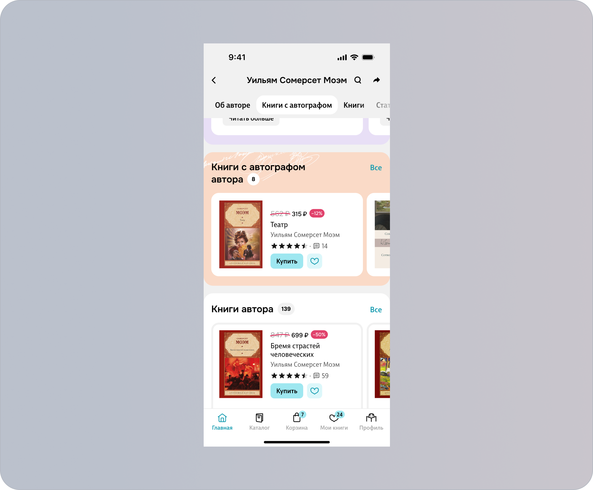
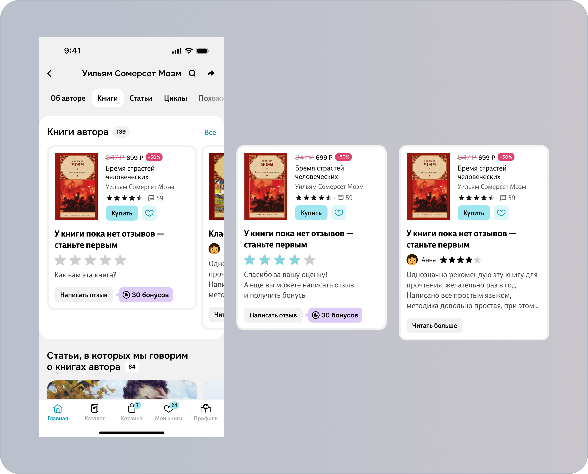
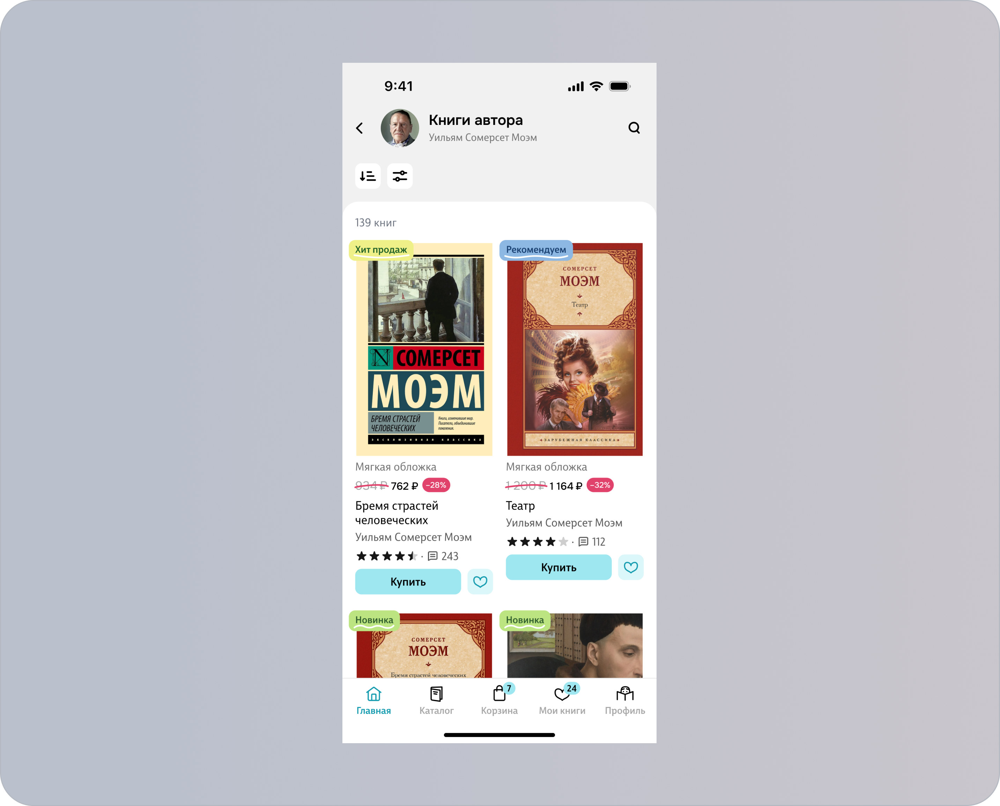
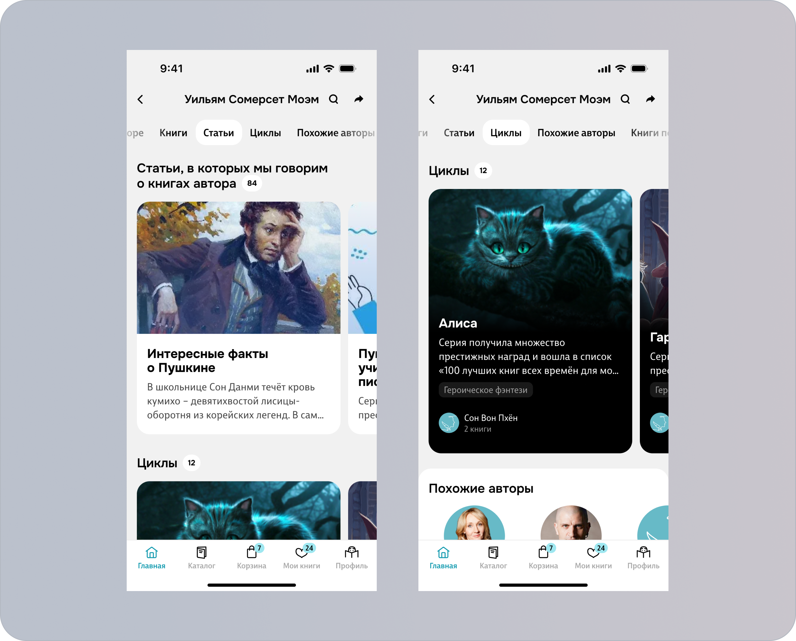
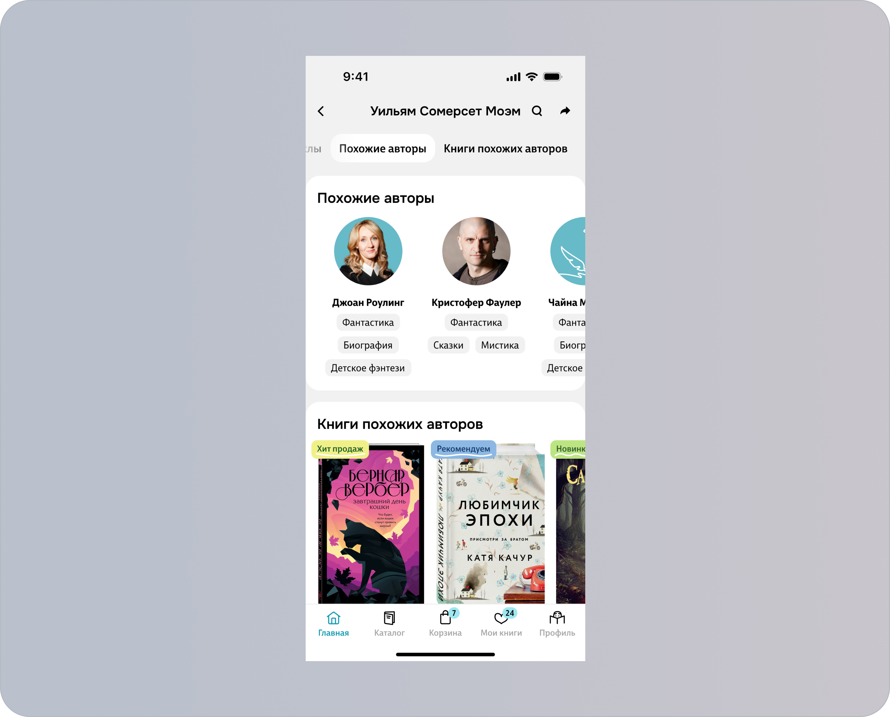

О задаче
Нужно было переработать экран автора, чтобы он стал более полезным для выбора книг и помогал пользователям в поиске контента.
Анализ поведения пользователей и решений на рынке показал, что текущий экран давал недостаточно информации для дальнейшего взаимодействия: пользователь мог посмотреть книги автора, но не всегда понимал, что изучить дальше.
В рамках задачи была пересмотрена структура экрана и добавлены новые точки для поиска контента: циклы произведений, похожие авторы и книги с похожей тематикой. Предполагалось, что это упростит навигацию, поможет пользователям быстрее находить интересные книги и положительно повлияет на ключевые продуктовые метрики.
Результаты
- CR в корзину увеличился на 3.7 п.п.
- CR в закладки увеличился на 2.23 п.п.

Моя роль в проекте
Отвечал за UX/UI-дизайн и продуктовую проработку экрана. С помощью JTBD определил основные работы пользователей на экране автора и определил, какие разделы и типы контента могут быть полезны им при выборе книг.
На основе этого сформировал структуру экрана, расставил приоритеты между контентными блоками и подготовил итоговые макеты.
Цели
- Основная цель проекта — повысить конверсию в корзину.
- Упростить поиск книг на экране автора и помочь пользователям находить интересные для себя произведения, о которых они могли раньше не подозревать.
Джобы
- Я хочу видеть больше информации об авторе, чтобы понимать кто это
- Я хочу видеть все книги автора, чтобы не искать их все вручную
- Я хочу видеть все циклы автора, чтобы не искать их все вручную и иметь возможность видеть книги в хронологической последовательности
- Я хочу видеть похожих авторов, чтобы иметь возможность открыть для себя интересные книги другого автора
- Я хочу видеть книги похожих авторов
- Я хочу видеть статьи, в которых упоминаются книги автора
- Я хочу знать какая книга автора сейчас самая популярная, это может меня замотивировать её купить
- Я хочу видеть книги с автографом автора, чтобы иметь возможность для коллекционирования
Гипотезы
Основываясь на анализе существующих данных по поведению пользователей на страницах авторов, если обогатим эти страницы дополнительной полезной информацией (циклы автора, похожие авторы, книги похожих авторов и т.д.), то пользователям станет проще ориентироваться и находить интересные книги
Метрики
- CR в корзину и закладки
- Кол-во просмотров/переходов и CTR по новым блокам
Что было изменено в интерфейсе
( 1 )
Добавилась цепляющие внимание шапка

( 2 )
Добавил рубрикатор для быстрого перехода к нужному блоку. Когда пользователь скроллит, то табы автоматические в нём переключаются.

( 3 )
Если у автора есть популярная книги, то показываем её на самом верху. Своего рода мини-PDP. Даём максимум информации о книге для того, чтобы помочь пользователю принять решение о покупке.

( 4 )
Далее в планах было разместить блок «Книги с автографом автора», но с таким типом товара есть некоторые сложности, поэтому решили отложить его реализацию на следующую итерацию.

( 5 )
Далее разместился самый важный блок «Книги автора». Здесь если у книги ещё нет отзывов или оценки, то предлагаем пользователю их оставить.
Ещё ниже — так выглядит внутренний экран с книгами автора. Здесь уже можно отсортировать или отфильтровать книги.


( 6 )
Далее разместились разделы со «Статьями» и «Циклами», в которых упоминается автор или его книги

( 7 )
Далее разместились «Похожие авторы» и «Книги похожих авторов». У «Похожих авторов» есть специальные теги категорий для того, чтобы пользователю было проще выбрать нужного по своему вкусу среди других.

Итоги
После запуска получились такие результаты:
- CR в корзину увеличился на 3.7 п.п.
- CR в закладки увеличился на 2.23 п.п.
- CTR «Самая популярная книга автора» — 3,3%
- CTR «Книги автора» — 13,39%
- CTR «Статьи» — 14,66%
- CTR «Циклы» — 18,33%
- CTR «Похожие авторы» — 4,42%
- CTR «Книги похожих авторов» — 8,2%
Видим, что новые блоки в целом интересны пользователям, особенно Статьи и Циклы.
✅ Гипотеза подтвердилась
Обновление экрана автора помогло пользователям лучше ориентироваться в контенте и находить больше интересных произведений. Пользователи активно взаимодействовали с новыми разделами, а рост конверсии в корзину и закладки показал, что страница стала эффективнее помогать в выборе книги.
Дальнейшие шаги
- Оставляю текущий вариант экрана и наблюдаю за ним
-
Пробую развивать направление дальше:
- можно ещё добавить авторам новые блоки с новинками, библиографией, премиями
- думаю над порядком блоков (возможно, стоит циклы поднять выше – хороший CTR)
- можно добавить новые механики (добавление мероприятий с авторами, добавление автора в избранные, возможность оставить автору отзыв и пр.)